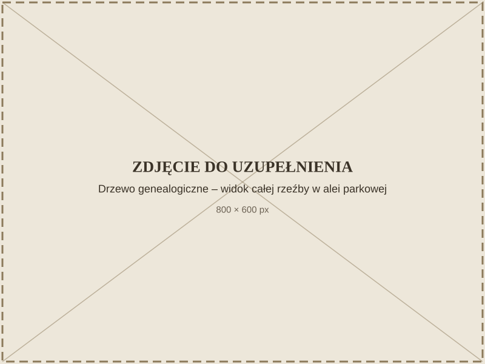
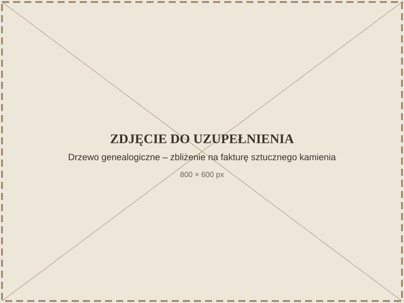

Drzewo genealogiczne
Nagranie
Wolisz przeczytać? Rozwiń transkrypcję
Drzewo genealogiczne to abstrakcyjna, organiczna forma rzeźbiarska powstała w 1977 roku, wykonana ze sztucznego kamienia. Rozgałęziający się kształt przywołuje na myśl konar drzewa i jest odczytywany jako symbol więzów rodzinnych, ciągłości pokoleń i splatających się ludzkich losów.

Rzeźba stoi w Alei Stanisława Strzyżyńskiego w Parku Zdrojowym — alei, która nosi imię samego artysty. To szczególny, rzadko spotykany zbieg okoliczności: twórca spaceruje po parku razem z odwiedzającymi, obecny nie tylko w swoich dziełach, ale i w nazwie miejsca.

Forma dzieła pozostaje otwarta na interpretację — dla jednych to genealogiczne drzewo rodu, dla innych uniwersalny symbol wzrostu i wzajemnych powiązań.
Jak dojść
Mini-mapa jest obecnie niedostępna.